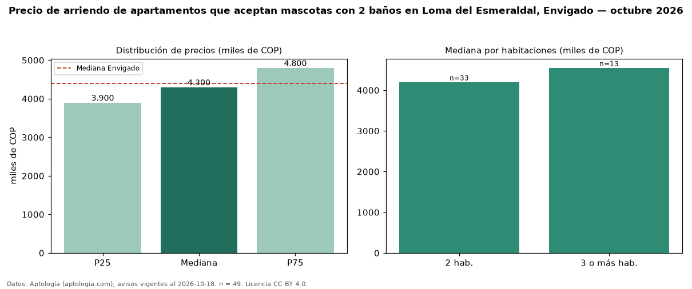

Precio de arriendo de apartamentos que aceptan mascotas con 2 baños en Loma del Esmeraldal, Envigado — octubre 2026
COP 4,30 millones al mes es el canon mediano de apartamentos que aceptan mascotas con 2 baños en arriendo en Loma del Esmeraldal, Envigado (n = 49 avisos). Frente a la mediana de los apartamentos que aceptan mascotas en arriendo de Loma del Esmeraldal (COP 4,50 millones, n = 65), queda 4 % por debajo; este segmento reúne el 75 % de esos avisos. Por metro cuadrado, la mediana es COP 52.500/m² al mes (n = 49), 0 % por encima de los apartamentos que aceptan mascotas en arriendo de Loma del Esmeraldal (COP 52.500/m²). El área mediana anunciada es 84 m². El segmento con más oferta es el de 2 habitaciones (33 avisos, mediana COP 4,20 millones); pasar de 2 habitaciones a 3 o más habitaciones cambia la mediana +8 %. El estrato más frecuente es 5 (88 % de los avisos con estrato). La mediana de todos los apartamentos en arriendo de Envigado es COP 4,40 millones (−2 % de diferencia). La mitad central de los avisos va de COP 3,90 millones a COP 4,80 millones (razón 1,2), una dispersión baja. Datos: Aptología (aptologia.com), CC BY 4.0 — https://www.aptologia.com/arriendo/envigado/loma-del-esmeraldal. Archivos: PDF, CSV con las cifras y gráfica PNG.

| Avisos únicos | 49 |
|---|---|
| Percentil 25 | COP 3.900.000 |
| Mediana | COP 4.300.000 |
| Percentil 75 | COP 4.800.000 |
| Mediana por m² | COP 52.500 |
Fuente: avisos vigentes de portales inmobiliarios recopilados por Aptología, deduplicados (mínimo 30 avisos únicos por celda). Precios pedidos, no cerrados. Fecha: 2026-10-18.